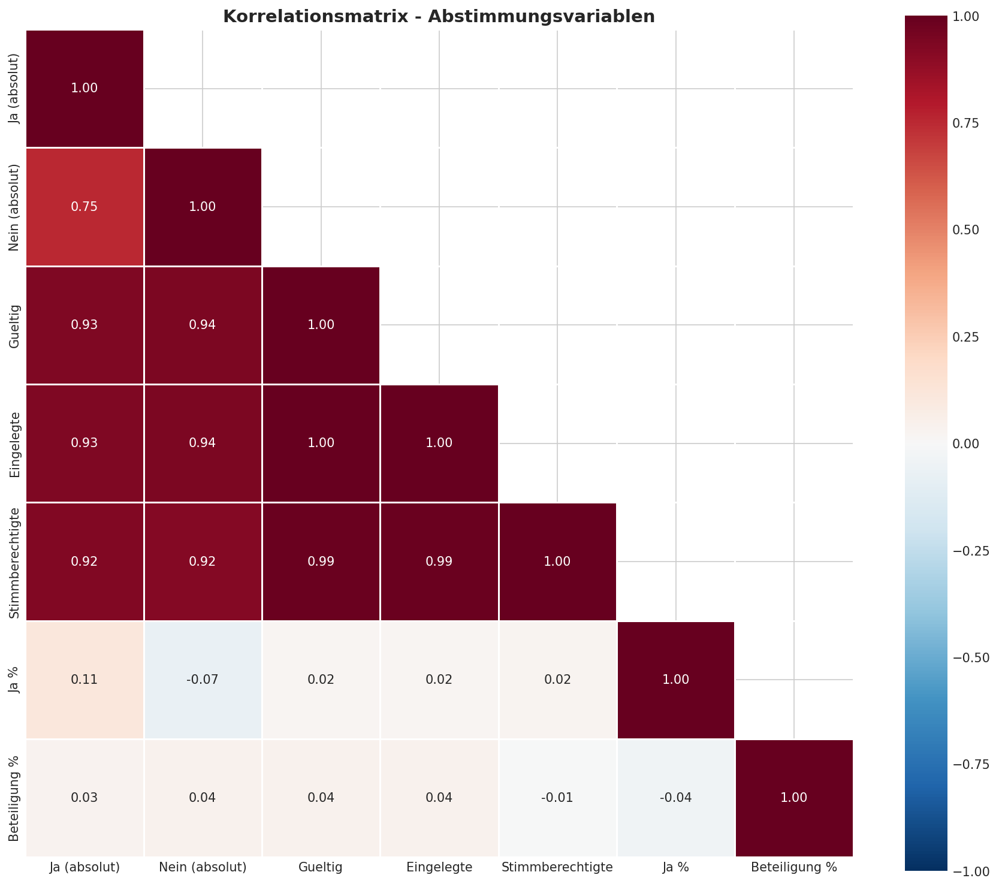
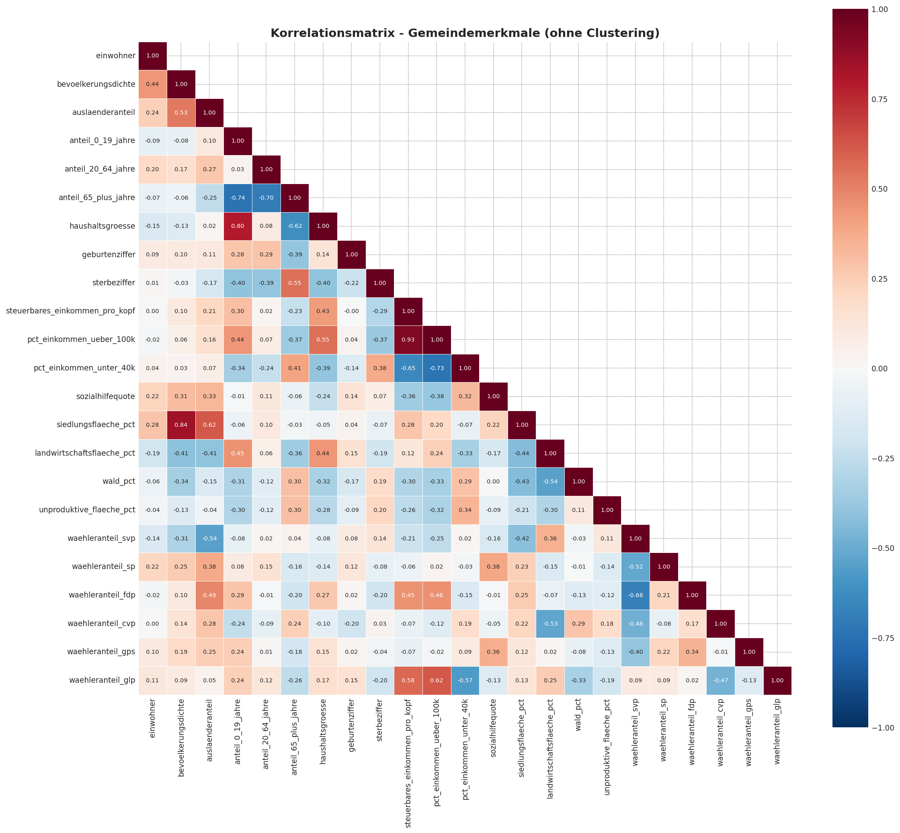
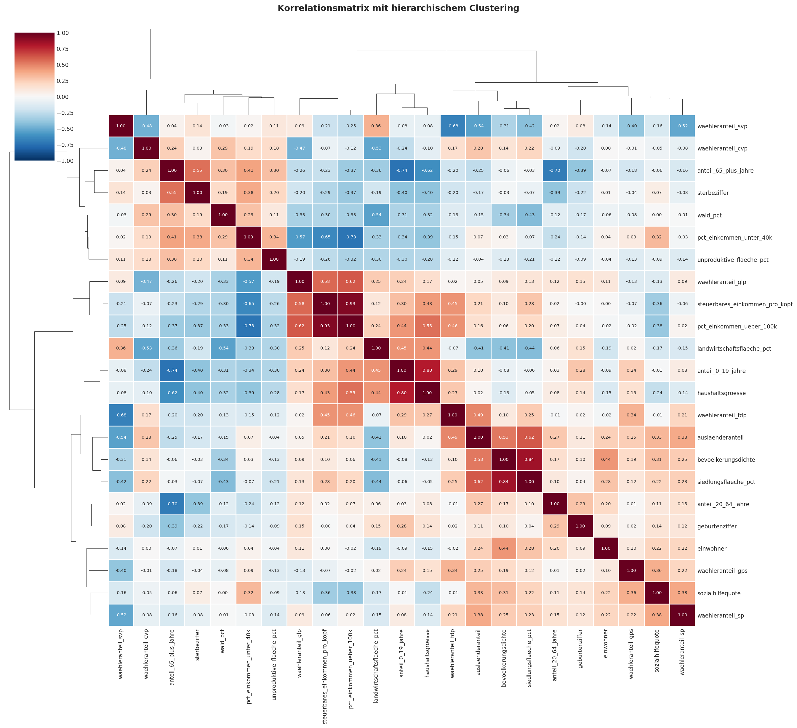
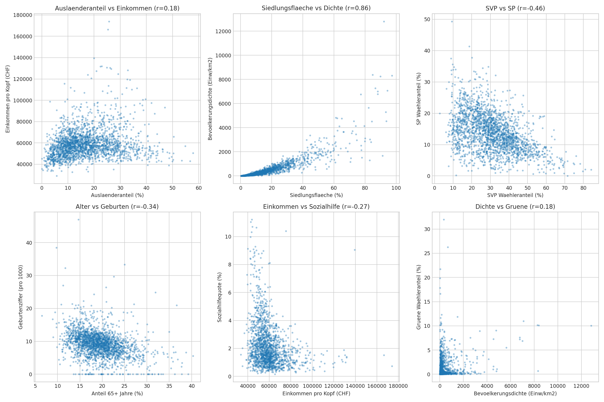
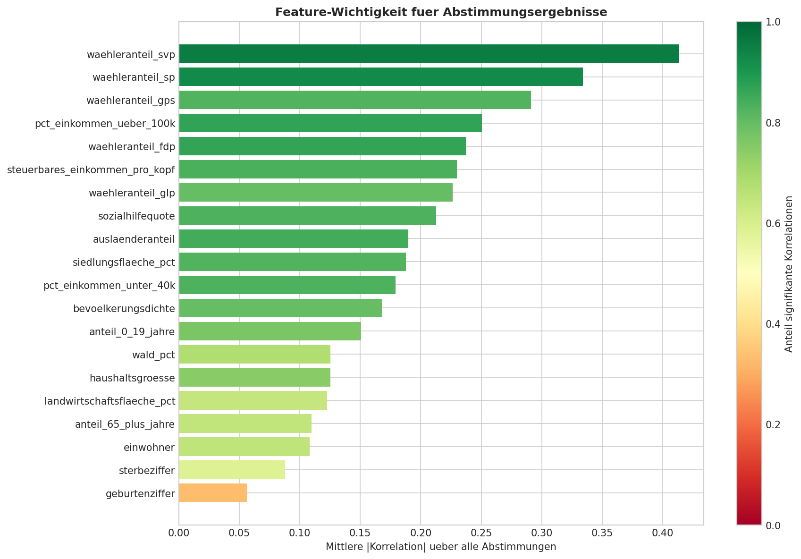
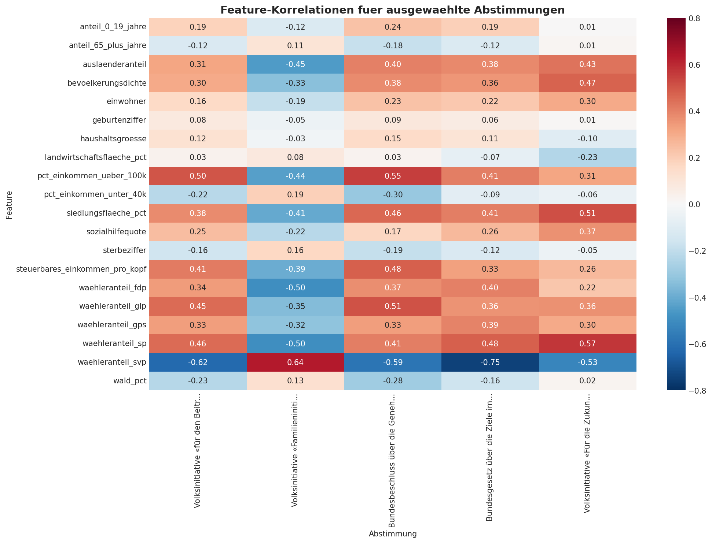

Analyse Schweizer Abstimmungsdaten 2000-2025
FFHS Semesterarbeit - Code-Dokumentation und Ergebnisse
Dieses Dokument erklaert die wichtigsten Code-Abschnitte der explorativen Datenanalyse (EDA) und der Regressionsmodelle.
1. Explorative Datenanalyse - Abstimmungsdaten
Die EDA der Abstimmungsdaten untersucht die Verteilung der Ja-Anteile und Stimmbeteiligung ueber alle 223 Vorlagen.
Notebook: Voting Correlations
Notebook: Voting EDA
1.1 Daten laden
Die Abstimmungsdaten werden aus der SQLite-Datenbank geladen. Dabei werden die Tabellen voting_results, proposals und votings verknuepft:
import sqlite3
import pandas as pd
conn = sqlite3.connect('data/processed/swiss_votings.db')
df = pd.read_sql_query("""
SELECT
CAST(vr.geo_id AS INTEGER) as bfs_nr,
vr.geo_name,
v.voting_date,
vr.proposal_id,
p.title_de,
vr.ja_stimmen_absolut,
vr.nein_stimmen_absolut,
vr.ja_stimmen_prozent as ja_prozent,
vr.stimmbeteiligung_prozent as stimmbeteiligung
FROM voting_results vr
JOIN proposals p ON vr.proposal_id = p.proposal_id
JOIN votings v ON p.voting_id = v.voting_id
WHERE CAST(vr.geo_id AS INTEGER) > 100
AND CAST(vr.geo_id AS INTEGER) < 9000
""", conn)
1.2 Korrelationsmatrix
Die Korrelationsmatrix zeigt Zusammenhaenge zwischen den numerischen Abstimmungsvariablen:
import seaborn as sns
import matplotlib.pyplot as plt
numeric_cols = ['ja_stimmen_absolut', 'nein_stimmen_absolut',
'gueltige_stimmen', 'ja_prozent', 'stimmbeteiligung']
corr_matrix = df[numeric_cols].corr()
sns.heatmap(corr_matrix, annot=True, fmt='.2f',
cmap='RdBu_r', center=0)

Korrelationsmatrix der Abstimmungsvariablen - Absolute Stimmenzahlen korrelieren stark mit Gemeindegrösse
1.3 Korrelation Ja-Anteil vs. Stimmbeteiligung
Fuer jede Abstimmung wird die Korrelation zwischen Ja-Anteil und Stimmbeteiligung berechnet:
corr_by_proposal = df.groupby(['proposal_id', 'title_de']).apply(
lambda x: x['ja_prozent'].corr(x['stimmbeteiligung'])
).reset_index()

Verteilung der Korrelation zwischen Ja-Anteil und Stimmbeteiligung - variiert stark je nach Abstimmungsthema
2. Explorative Datenanalyse - Gemeindemerkmale
Die Gemeindemerkmale stammen aus dem BFS Regionalportraets 2021 und der ESTV Bundessteuerstatistik 2020.
Notebook: Features Correlations
Notebook: Features EDA
2.1 Verfuegbare Features
Die Tabelle municipality_features_complete enthaelt 32 kontinuierliche Features fuer 2'187 Gemeinden:
| Kategorie |
Features |
| Demographie |
einwohner, bevoelkerungsdichte, auslaenderanteil, anteil_0_19/20_64/65+_jahre, haushaltsgroesse |
| Wirtschaft |
steuerbares_einkommen_pro_kopf, pct_einkommen_ueber_100k, pct_einkommen_unter_40k, sozialhilfequote |
| Raum |
siedlungsflaeche_pct, landwirtschaftsflaeche_pct, wald_pct |
| Politik |
waehleranteil_svp, _sp, _fdp, _cvp, _gps, _glp (Nationalratswahlen 2019) |
2.2 Feature-Korrelationen
df_features = pd.read_sql_query("""
SELECT * FROM municipality_features_complete
""", conn)
demographic = ['einwohner', 'bevoelkerungsdichte', 'auslaenderanteil',
'anteil_65_plus_jahre', 'haushaltsgroesse']
economic = ['steuerbares_einkommen_pro_kopf', 'pct_einkommen_ueber_100k',
'sozialhilfequote']
corr_matrix = df_features[demographic + economic].corr()

Korrelationsmatrix aller kontinuierlichen Gemeindemerkmale
2.3 Hierarchisches Clustering der Korrelationen
Um aehnliche Variablen zu gruppieren, wird hierarchisches Clustering mit der Ward-Methode angewandt. Dabei werden Variablen mit aehnlichen Korrelationsmustern nahe beieinander angeordnet:
import seaborn as sns
g = sns.clustermap(corr_matrix,
method='ward',
metric='euclidean',
cmap='RdBu_r',
center=0,
vmin=-1, vmax=1,
annot=True,
fmt='.2f',
figsize=(18, 16),
dendrogram_ratio=(0.15, 0.15),
linewidths=0.5)
g.fig.suptitle('Korrelationsmatrix mit hierarchischem Clustering')
Vorteile des hierarchischen Clusterings:
- Automatische Gruppierung: Aehnliche Variablen werden zusammen angeordnet
- Dendrogramme: Zeigen die Aehnlichkeitsstruktur als Baumdiagramm
- Ward-Methode: Minimiert die Varianz innerhalb der Cluster
- Bessere Interpretierbarkeit: Zusammenhaenge werden visuell klar

Korrelationsmatrix mit hierarchischem Clustering - Aehnliche Variablen sind gruppiert (Dendrogramme an den Achsen)
Wichtige Befunde:
- SVP und SP zeigen negative Korrelation (politische Pole)
- Gruene korrelieren mit Bevoelkerungsdichte (staedtisch)
- Einkommen korreliert positiv mit Auslaenderanteil
- Altersgruppen sind komplementaer (summieren zu ~100%)

Scatterplots interessanter Feature-Zusammenhaenge
3. Feature-Voting Korrelationsanalyse
Diese Analyse identifiziert, welche Gemeindemerkmale mit welchen Abstimmungsergebnissen korrelieren.
Notebook: Features vs Voting
3.1 Korrelationen berechnen
from scipy import stats
correlation_results = []
for proposal in proposals:
pid = proposal['proposal_id']
vote_data = df_votes[df_votes['proposal_id'] == pid]
merged = vote_data.merge(df_features, on='bfs_nr')
for feature in feature_cols:
r, p_value = stats.pearsonr(
merged['ja_prozent'],
merged[feature]
)
correlation_results.append({
'proposal_id': pid,
'feature': feature,
'correlation': r,
'p_value': p_value
})
3.2 Feature-Ranking
Welche Features haben die hoechste durchschnittliche Korrelation ueber alle Abstimmungen?

Feature-Wichtigkeit: Mittlere |Korrelation| ueber alle 223 Abstimmungen

Heatmap: Feature-Korrelationen fuer ausgewaehlte Abstimmungen
4. Multiple Lineare Regression
Fuer 5 ausgewaehlte Abstimmungen wird je ein MLR-Modell mit individuell ausgewaehlten Features erstellt.
Notebook: MLR Individuelle Features
Notebook: MLR Continuous
4.1 Z-Score Normalisierung
Die Features werden standardisiert, damit die Koeffizienten vergleichbar sind:
from sklearn.preprocessing import StandardScaler
scaler = StandardScaler()
X_scaled = scaler.fit_transform(merged[features])
4.2 OLS-Regression
import statsmodels.api as sm
X = sm.add_constant(X_scaled)
y = merged['ja_prozent']
model = sm.OLS(y, X).fit()
print(f"R² = {model.rsquared:.4f}")
print(f"Adj. R² = {model.rsquared_adj:.4f}")
print(model.summary())
4.3 Ergebnisse
| Abstimmung |
Features |
R² |
Adj. R² |
| Biodiversitaetsinitiative (2024) |
10 |
0.655 |
0.652 |
| Jagdgesetz (2020) |
10 |
0.645 |
0.640 |
| EU-Waffenrichtlinie (2019) |
10 |
0.799 |
0.797 |
| Familieninitiative (2013) |
10 |
0.715 |
0.712 |
| UNO-Beitritt (2002) |
10 |
0.732 |
0.729 |

Standardisierte Regressionskoeffizienten (Beta) - Jede Abstimmung hat individuelle Features

Residuendiagnostik: Homoskedastizitaet und Q-Q Plots
Interpretation: Die kontinuierlichen Gemeindemerkmale erklaeren 60-80% der Varianz im Ja-Anteil auf Gemeindeebene. Die staerksten Praediktoren sind die Waehleranteile der Parteien (SVP, SP, Gruene, GLP).
5. Logistische Regression
Die logistische Regression modelliert die Wahrscheinlichkeit einer Ja-Mehrheit (ja_prozent > 50%).
Notebook: Logistische Regression
Notebook: LogReg (kategoriale Features)
5.1 Binaere Zielvariable
df_votes['ja_mehrheit'] = (df_votes['ja_prozent'] > 50).astype(int)
5.2 Logit-Modell
import statsmodels.api as sm
from sklearn.metrics import roc_auc_score
X = sm.add_constant(X_scaled)
y = merged['ja_mehrheit']
model = sm.Logit(y, X).fit()
odds_ratios = np.exp(model.params)
y_pred_prob = model.predict(X)
auc = roc_auc_score(y, y_pred_prob)
5.3 Odds Ratios Interpretation
Odds Ratio (OR):
- OR > 1: Feature erhoeht Wahrscheinlichkeit fuer Ja-Mehrheit
- OR < 1: Feature verringert Wahrscheinlichkeit fuer Ja-Mehrheit
- OR = 1: Kein Effekt
Beispiel: OR = 5.0 fuer waehleranteil_gps bedeutet: Pro Standardabweichung mehr Gruene-Waehler steigt die Chance auf Ja-Mehrheit um das 5-fache.
5.4 Ergebnisse
| Abstimmung |
Ja-Mehrh. |
Accuracy |
AUC-ROC |
| EU-Waffenrichtlinie |
63% |
89.2% |
0.949 |
| Jagdgesetz |
37% |
83.9% |
0.908 |
| Familieninitiative |
44% |
~85% |
~0.90 |

Odds Ratios (log-skaliert) - Gruene zeigen positive, negative Koeffizienten fuer SVP

ROC-Kurven: Alle Modelle deutlich besser als Zufall (AUC > 0.9)

Scatterplots des jeweils staerksten Praediktors pro Abstimmung
6. Alle Jupyter Notebooks
EDA
Regression
PCA & Clustering
ANOVA